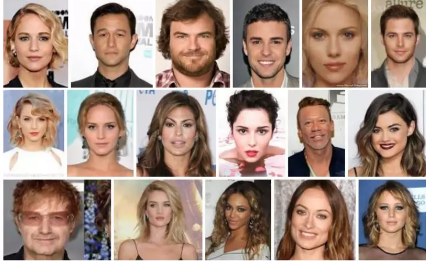
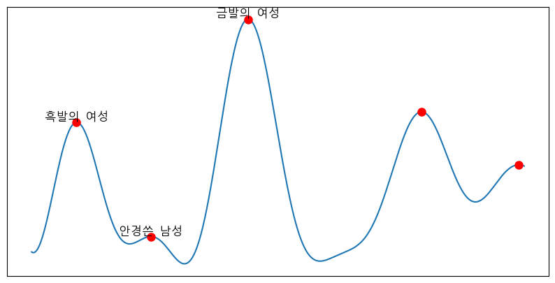
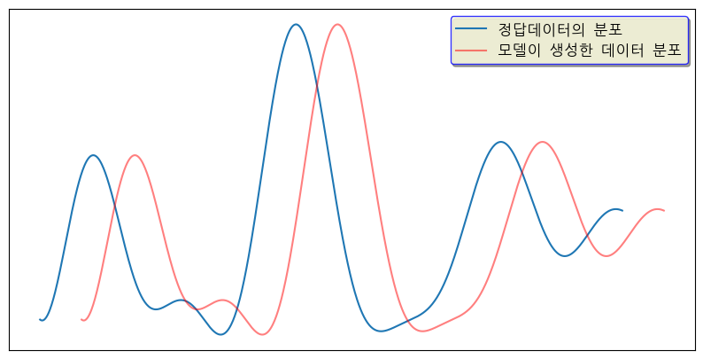
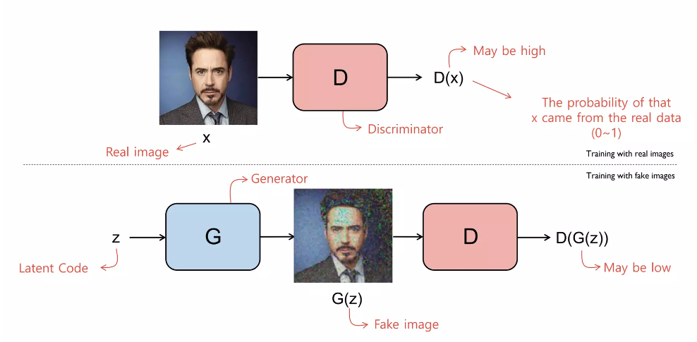
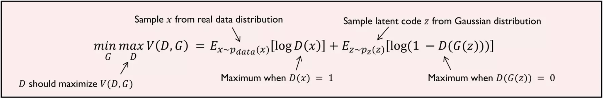
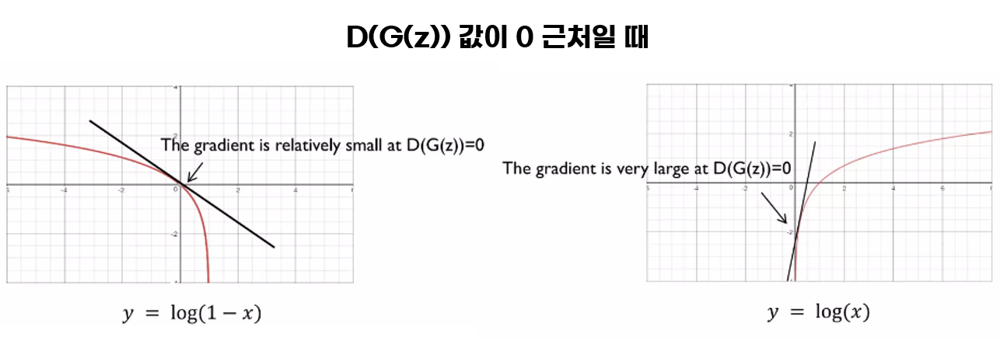

# import
import torch
import torch.nn as nn
#데이터
x='사진데이터'
z='노이즈'
# 모델
D= nn.Sequential(
nn. Linear(784, 128),
nn. ReLU(),
nn.Linear(128, 1), nn.Sigmoid()) #sigmoid의 이유는 D의 결과값이 참인지 거짓인지만을 판별하기 때문에 0과 1사이의 확률값으로 만든다.
G= nn.Sequential(
nn. Linear(100, 128),
nn.ReLU(),
nn. Linear(128, 784),
nn.Tanh()) #Tanh는 -1~1사이로 만드는 역할인데 사실 모델이 학습하면서 자동으로 범위가 설정된다.
# loss_fn
criterion = nn.BCELoss() #BCELoss를 사용하는 이유는 D의 결과값이 참인지 거짓인지 판별하는 이진분류이기 때문이다.
# optimizer
d_optimizer = torch.optim.Adam(D.parameters(), lr=0.01)
g_optimizer = torch.optim.Adam(G.parameters(), lr=0.01)
# 학습
while True:
# train D (진짜와 가짜를 구분하기)
loss = criterion(D(x), 1) + criterion(D(G(z)), 0)
loss.backward()
d_optimizer.step()
# train G (가짜를 진짜처럼 만들기)
# *주의* G만 학습해야하고 D는 학습하면 안된다.
loss = criterion(D(G(z)),1)
loss.backward()
g_optimizer.step()GAN
generate의 모델이 train데이터의 분포를 학습하는 것이 목표이다.
기본지식
확률변수 : 확률 변수란 특정한 값을 가진 확률을 나타내는 함수를 의미한다. ex)주사위의 확률 변수 1/6
이산확률분포 : 확률변수 x의 개수를 정확히 셀 수 있을때의 분포 ex)주사위는 1/6
연속확률분포 : 각각의 사건들의 값이 연속적이라고 하면 정규분포처럼 모델링 가능하다. ex)달리기 기록, IQ 값
데이터로 보는 gan의 목적(확률분포를 비슷하게 만들어라)
이미지 같은 경우에는 많은 픽셀로 구성되어있고 채널도 3개씩있다. 고차원이라고 해도 통계적인 평균치가 존재할 수 있고 모델은 이를 수치적을 표현할 수 있게된다.

다음과 같이 64643 shape의 서양인 얼굴 데이터 셋이 있다고 하자

실제 이미지의 확률밀도함수가 있을때 이러한 1차원의 그래프의 형태를 띈다고 가정을 하겠다.(실제로는 굉장한 고차원의 벡터이다.)
서양 사람 얼굴데이터세트에서 금발의 여성데이터셋이 가장 많다고 했을때 금발의 여성에 해당하는 벡터의 확률밀도 값이 가장크고 그다음 흑발의 여성이 큰 것을 알 수 있다. 반면 안경을 낀 남자의 데이터가 작다고 했을때 해당하는 벡터의 확률 밀도값은 상대적으로 작게 나타난다.
만약 사람의 이미지가 아니거나 깨진이미지 같은 경우는 안경쓴 남성보다 작은 값의 확률 밀도를 갖게 될 것이다.

파란색은 원래의 64*64*3의 픽셀의 데이터의 분포이고
빨간색은 모델이 생성한 64*64*3의 픽셀의 데이터의 분포이다.
즉. Generative Adversarial모델의 목표는 두게의 격차를 좁히는 것이다.
GAN ( Generative Adversarial Networks )
목차
1) 직관적인 해석
2) 수식으로 해석
3) code로 해석
1) 직관적인 해석

위의 그림은 진짜 이미지를 가지고 학습할 때이고 아래의 그림은 가짜이미지를 가지고 학습할때이다.
GAN에는 2가지 모델이 존재한다. 1) Discriminator 모델 2) Generator 모델
최종 목적은 generator를 학습시키는 것이다.
먼저 Discriminator같은 경우는 진짜이미지를 진짜로 구별하도록 가짜를 넣으면 가짜로 구별하도록 학습시키는방법 Discriminator모델의 input은 (64*64*3)의 고정된 벡터 output은 (확률1,확률2)로 진짜인지 가짜인지 classification해주면된다. 보통 sigmoid 함수를 거쳐서 0.5를 기준으로 classification하게 된다.
다음 Generator같은 경우는 랜덤한 코드를 받아서 이미지를 생성해야 하고 Discriminator모델을 속여서 1이 나오게 해야한다.
2)수식으로 해석

D는 Discriminator 모델 G는 Generator 모델
Ex-Pdata(x)[log D(x)] = 평균~정답데이터분포(로부터 샘플링)을 했을때 D모델은 1에 가까운 값을 내도록 반응해야한다. 그래서 logD(x(샘플))값이 최대화되도록 하면된다.
D(x)값의 범위는 0~1사이의 값이다. 즉 logD(x)에 적용되면 D(x)가 1일때 최대값이 되고 0일때는 -무한대 값이 된다.Ez~p2(z) [log(1 − D(G(z)))] = 랜덤한 벡터를 모델G한테 줬을때 가짜이미지를 생성했고 가짜이미지를 모델D에 넣었을때의 결과는 가짜이미지이기 때문에 0에 가까운 값을 내놔야한다. 이것을 수식적으로 표현할때에는 log(1-x)로 표현을 했다. 그래서 가짜를 성공적으로 판별했을때의 결과가 1에 가깝게 표현되었다.
두 식다 log()이고 결과가 1에 가까워야 성공적인 학습이 되도록 설계 되어있다.
3)code로 해석
몇가지 참고사항
** log(1-D(G(z)))를 최소화하는 것이 아닌 log(D(G(z)))를 최대화 해야하는 이유 **
G는 초반에 형편없는 이미지를 만들게 되고 D에 넣었을 때 당연히 거짓이라고 확신하기 때문에 결과 값이 0에 가깝게 나타난다.
0에 가까운 결과값을 log함수에 넣게되면 기울기가 작게 나타나게 된다.(아래 1번 그래프 참고)
G의 형편없는 그림을 학습하는 상황을 빨리 벗어나기 위해서는 기울기를 크게 나타나야 한다.(아래 2번 그래프 처럼)
기울기를 크게 해주기위해서는 식을 log(1-x)를 최소화 하는것이 아닌
log(x)를최대화하는 것으로 바꾸는 것이다.

다양한 GAN
- DCGAN
D 풀리커넥티드 -> 컨벌루션레이어 G d컨벌루션 or 트랜스포즈컨벌루션
polling레이어를 사용하지 않았고 스트라이드 사이즈가 2이상의 배치노말리제이션, 아담옵디마이져, 모멘텀 2가지(0.55,0.999)<- 6464생성시 컨벌루션 레이어를 4개정도를 사용하는데 저 두개를 사용하면 실험적으로 잘 되는 것으로 나타났다.